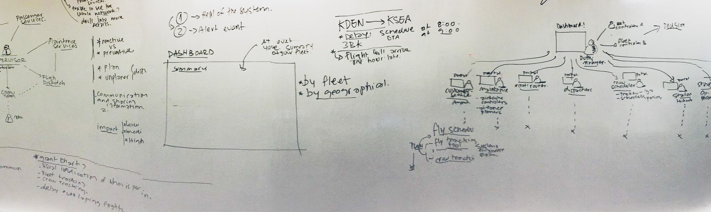
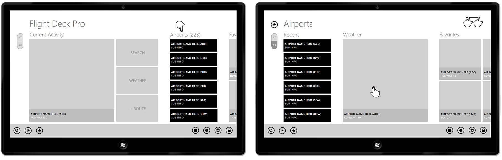

Jeppesen Symphony
We must go beyond thinking about a single flight. The great leap for disruption management will be understanding the entire fleet and the cascading effects of each disruption and decision.
Overview
A personalized and interactive document reader that lets you view, annotate and organize your documents from virtually anywhere - it even works offline. All while giving you peace of mind knowing that these documents are safely stored in both the app and Binder Cloud. Always with you and working for you, Binder is ready when you are.
Setting the Goals
- - Improve the ability to better manage disruptions
- - Present holistic view of day-of-operations situational awareness
- - Combine data from disparate sources
- - Enhance decision support based on sophisticated data analysis
- - Provide configurability to suit any airline's KPIs and business rules
Pain Points
Inefficient Display of Information
Information is accessed from various applications and is spread across multiple monitors (e.g. Gantt Chart, Live Weather, Flight Explorer and Aircraft Situational Display). Would like a better use of screen space.
Fragmented Information
Users must hunt across multiple applications to connect relevant information. Would like a more unified display of information.
Inconsistent Recovery Decisions
Different people handle similar situations differently. Would like decision making to be more consistent via the decision support tools.
Misalignment with Business Goals
Not all airlines have consistent, repeatable recovery processes in place or plans informed by KPIs. Would like more consistency and control driven by business goals.
Lack of Integrated Data Sources
Fleet and crew tracking systems are not always linked (integrated). This will be a new requirement/success criteria.
Personas
Ensure we know who your users are. The General User type includes:
Senior Management
Monitor and view high level information summarised from the operational details. See how the company is trending and view alerts that will impact the successful operations of the business
Production Users
These are the users we will focus on initially. Quickly and accurately assess the current situation within the context of historical events. Assess the characteristics of alternative disruption recovery recommendations. Choose from disruption recovery recommendations, choose a different recovery action, or take no action
Analyst
Test operational efficiency and robustness with advanced analytics tools, methods and processes within the context of current and alternative operational motivations

Scenarios
We came up with some scenarios which can help us learn about the workflow through a specific example
Disruption Scenario - 1
We walked through a scenario in detail to understand some of the tasks and decisions that the flight ops personnel have to deal with.
Tail 123 scheduled for 2 flights: DEN to LAS to HOU
• ETA in Las Vegas is 10:55am
• ETD from Las Vegas is 11:00am
• ETA in Houston is 4:00pm
Tail 456 schedule: HOU to LHR
• ETD from Houston is 5:30pm to London
In this example the flight from Denver has been delayed by 1 hour. There are 20 passengers from this flight that are connecting to an international flight in Houston.
Assumptions in this scenario
- • No maintenance issues
- • Cause of the delay is unknown and does not matter
- • Occurs within a single airline
- • No tail swap available
- • Crew change in Las Vegas for the flight to Houston
Experience Map
Disruption Scenario - 2
Later, the same aircraft (Tail 123) reports a 20-minute en route delay from Las Vegas to Houston.
Tail 123 schedule: LAS to HOU
• ETA in Houston was 4:40pm (now 5:00pm!)
Tail 456 schedule: HOU to LHR
• ETD from Houston is 5:30pm to London
Passengers who need to connect to the international flight out of Houston cannot make their connection based on the current schedule.
Experience Map
Information Architecture Phase
We set out to evaluate and perform a heuristic review of the old Jeppesen apps with an intent of designing a top notch experience for the latest app. We challenged ourselves to create a solution that both retain the current application capabilities and leverage the latest technological capabilities.
What we have come up is a seamless user transition for Jeppesen users to access the FlightDeck content with minimal learning curve.
Task Flows
Wireframes
Airport
Route